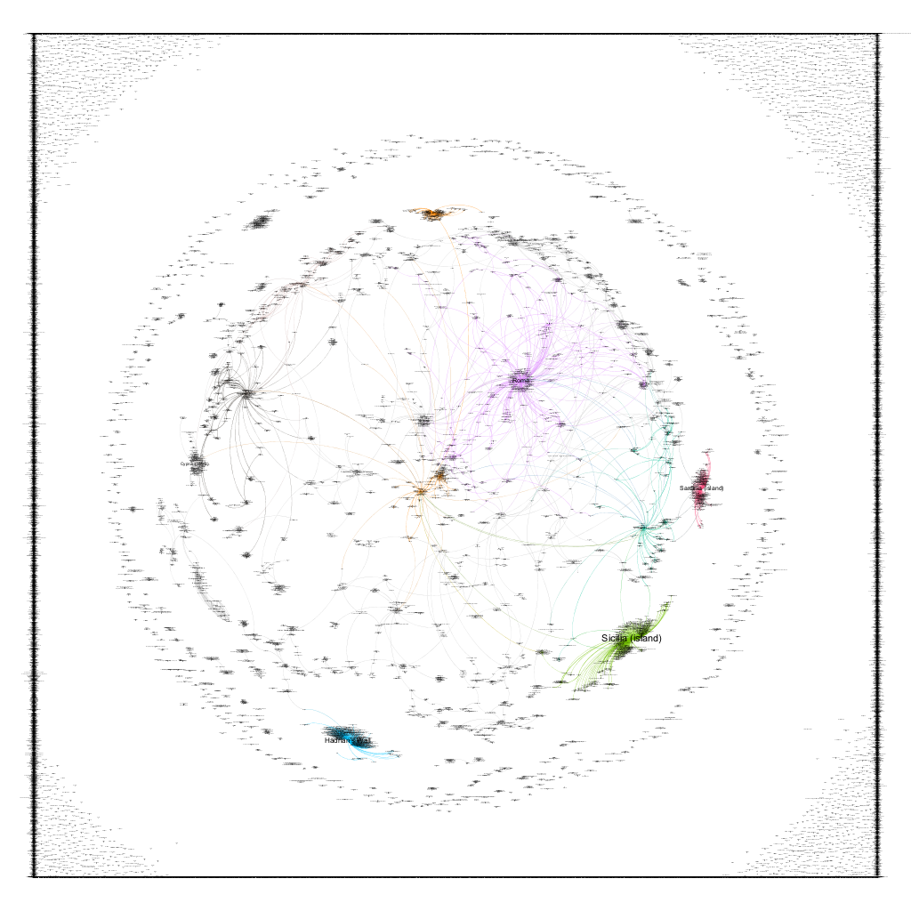
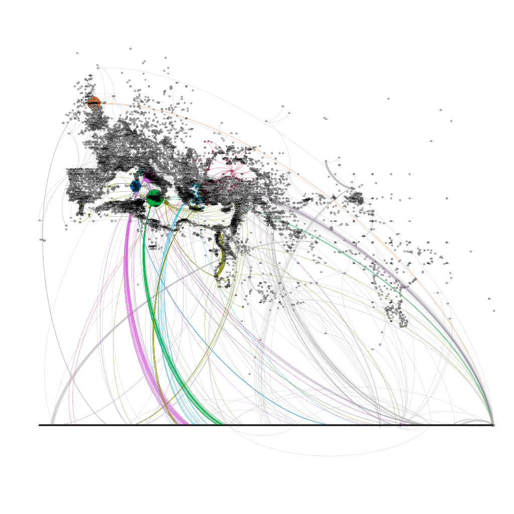

What do you do with 36,409 places and 6,506 connections? Some cartographic representations of Pleiades data
Two projects that I am involved with, Pleiades and the World-Historical Gazetteer at the University of Pittsburgh, have been devoting considerable time and energy to modeling conceptual places and their connections, so I thought it was worth discussing a few of our observations and presenting some preliminary steps to visualize what we are doing.
First, a somewhat crowded overview of all of the Pleiades data set with map symbols representing different place types.
[caption id=“attachment_1171” align=“alignnone” width=“3507”] Figure 1: All Pleiades places[/caption]
Figure 1: All Pleiades places[/caption]
At this level of zoom the map is nearly incomprehensible, but it does reveal some interesting aspects of our data set. The Grid like structure in India and central Asia is the result of “dumping” places for which we have insufficient data into the middle of Barrington Atlas grid squares. For the editorial board such a view is actually quite useful, as it highlights where we need to clean our data and focus on creating better locations.
Another way to show the reach of the Pleiades project is through a choropleth map, which shades different countries according to the number of Pleiades places within them.
[caption id=“attachment_media-14” align=“alignnone” width=“4677”] Figure 2: Choropleth Map[/caption]
Figure 2: Choropleth Map[/caption]
This is interesting, but I think it gives a fairly misleading sense of Pleiades coverage. From this map a reader would be unable to tell the extent of our data into Russia, China, and other countries where our locations are clustered around certain areas, not evenly spread throughout the country. It does highlight the areas where we have fairly extensive coverage, namely Italy, Greece, and Turkey.
To get around these issues, very often projects like ours use heat-maps to show both the concentration and extent of their data. I find this particular approach to be more aesthetically pleasing than simply throwing all of the points on the map, but due to the nature of a heat-map, I am still not convinced that it accurately depicts the extent of our coverage.
[caption id=“attachment_media-19” align=“alignnone” width=“4677”] Figure 3: Heat Map[/caption]
Figure 3: Heat Map[/caption]
One of my issues with heat-maps is how the colors “bleed” into areas where there are not points. While this can be adjusted and refined by decreasing the radius around each point, if taken too far the heat-map will simply show isolated dots of color instead of the expected continuous whole.
One experiment that I have done is to try and combine heat maps with a Voronoi diagram. The basic idea behind this approach is that the GIS system creates a polygon around each point, and any spot within that polygon is closer to that particular point than any other known point. This helps Pleiades editors, as a “hotspot” in one polygon indicates that there are multiple places “stacked” on one another on the same point, which is a good indication that we are dealing with inaccurate data. Conversely, a “hotspot” that extends through multiple polygons is expected behavior, and signifies that there is a dense cluster of points that are in close proximity but nevertheless still are in distinct locations.
[caption id=“attachment_media-24” align=“alignnone” width=“4677”] Figure 4: Detail of Voronoi Polygons and a Heat-Map[/caption]
Figure 4: Detail of Voronoi Polygons and a Heat-Map[/caption]
This is a very aesthetically pleasing map, but it is still difficult to quickly identify the correspondence between points, polygons, and the heat map. Using a hex-bin map (which is essentially a choropleth map with small hex shapes) styled like a heat map perhaps provides the cleanest and most comprehensible view of both our data coverage and density.
[caption id=“attachment_media-11” align=“alignnone” width=“4677”] Figure 5: Hex-bin map with heat map coloration[/caption]
Figure 5: Hex-bin map with heat map coloration[/caption]
Of all the representations mentioned here (and many tests which were far too incomprehensible to show), I believe this map offers by far the best combination of understandability, honesty, and presentation. It clearly shows the concentration of our data in the Mediterranean like a heat map, but does a far better job of showing the precise location of the data points. It also shows a far more honest depiction of the number of points per country and the actual location of those points, which is not the case with a choropleth map at a country scale.
What these maps do not capture is the presence of connections in the Pleiades data set. As part of our evolving data modeling and best practices, we are now experimenting with a more robust system for expressing relationships between different places in our data set. These relationships could be political, geographic, or highly conceptual. One highly interesting product of this approach is that we can start thinking of the Pleiades gazetteer as a description of a network of places, not just as a list of their names and locations.
As a result, it is now possible to graph some of the relationships in our data. This is highly experimental and very incomplete, but I hope that by sharing our first steps in this direction that we can generate some discussion on our approach.
The first thing that I did was to download the Pleiades data set, then extract the connections information, creating a spread sheet that listed each connection as a source - target combination that social network analysis software would understand. Essentially any place that connected to another place was the source, while the place connected to was the target. This was then put into Gephi, where different “communities”, or places with denser connections to each other, are indicated by different colors.
[caption id=“attachment_1177” align=“alignnone” width=“1024”]

Figure 6: Detail of the Pleiades connections graph[/caption]The figure above is a detail of a portion of the resulting graph. You can see communities clustering around regions like Sicily and Sardinia, or around extremely important cities like Rome. The square on the outer reaches of the graph is simply a number of unconnected places that are pushed to the edges by the Gephi visualization software. While this is an interesting and somewhat compelling visualization, it is devoid of any geographic context. Luckily, Gephi has a plugin that places nodes (in our case the places) in a geographic location of there is data available. As we have location data for most of our places, we can use this plugin, which yields the result below.
[caption id=“attachment_1178” align=“alignnone” width=“1024”]

Figure 7: Pleiades places as a geospatial network[/caption]Now we are getting somewhere! The broad outlines of the Mediterranean are visible, as are features like the Nile river and even the outline of India. However, this network is still not on a geographic map (the Gephi globe plugin does not exactly match the coordinate system used by the geography plugin, and also it is based on modern geography), so we are somewhat missing the larger spacial context. Unfortunately there is not an easy way to export the specially enhanced network with Gephi’s statistics and colors - the .kml plugin does capture the color, but lumps all of the statistics into a single description tag.
After some experimentation with exporting, importing, and reexporting in Gephi and QGIS, I finally found a solution by importing the .kml exported from Gephi into QGIS and exporting that as a .csv file which can then be manipulated in OpenRefine to “extract” all of the information from the description field. From there, the .csv file can be re-imported into QGIS, which results in the visualization below.
[caption id=“attachment_media-29” align=“alignnone” width=“4677”] Figure 8: Pleiades spatial connections overview map[/caption]
Figure 8: Pleiades spatial connections overview map[/caption]
While somewhat crowded and messy, a closer of Italy view shows the power of this visualization.
[caption id=“attachment_media-34” align=“alignnone” width=“4677”] Figure 9: Network around Rome without labels[/caption]
Figure 9: Network around Rome without labels[/caption]
[caption id=“attachment_media-39” align=“alignnone” width=“4677”] Figure 10: Network around Rome with labels[/caption]
Figure 10: Network around Rome with labels[/caption]
These visualizations show the networks of connections within a spatial context, and are an intriguing way to approach entities like kingdoms, political entities, or other place groupings. We are already experimenting with placing regions and larger entities (like Sardinia and Sicily) as the “midpoint” between all of their constituent connections, which you can see displayed on the maps above.
However, I want to take this idea one step further and eliminate the representative point entirely from such places. To do so, I decided that a mono modal network, or a network of just one place type, would be an interesting way to represent these connections. In short, any place that connected to the place Sardinia would now connect directly to all of the other places that connected to Sardinia, and the place marker of Sardinia would be eliminated from the network entirely. This resulted in a very interesting visualization where the density of network connections almost resembles a polygon.
[caption id=“attachment_media-44” align=“alignnone” width=“4677”] Figure 11: Single mode network representation of Pleiades data[/caption]
Figure 11: Single mode network representation of Pleiades data[/caption]
Even though I am still figuring out a method to transfer the color of the links from Gephi to QGIS, this type of representation has tremendous potential. If we can class different connections and pull those form the data set, we can begin to represent political areas, land masses, and other groupings as the sum of their shared connections in geographic space. So, instead of drawing arbitrary polygons, it is the connections themselves that create the “area” of a place. If these connections are able to respect underlying geography (roads, mountain passes, navigable rivers, springs, and other features), I think we may have a very powerful way of representing economic regions, areas of social interaction, political control, etc, and explore how those different networks interact and influence each other in geographic space.

This work is licensed under a Creative Commons Attribution-ShareAlike 4.0 International License.